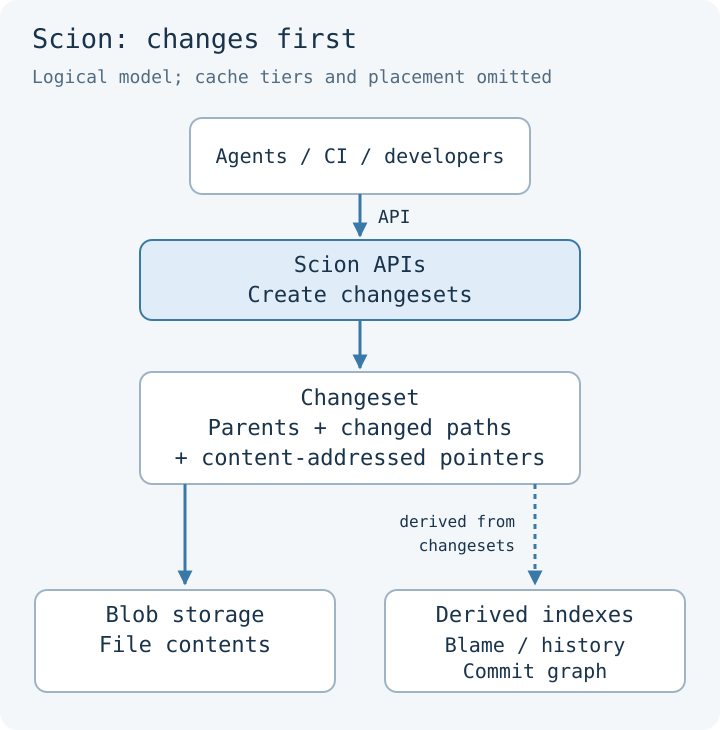
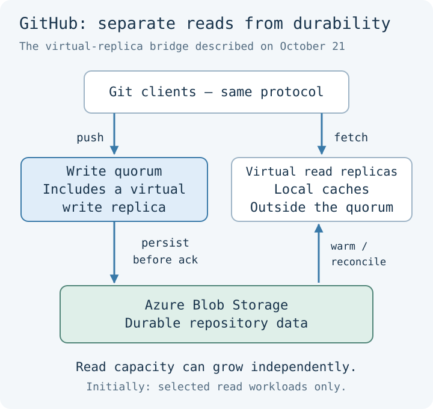
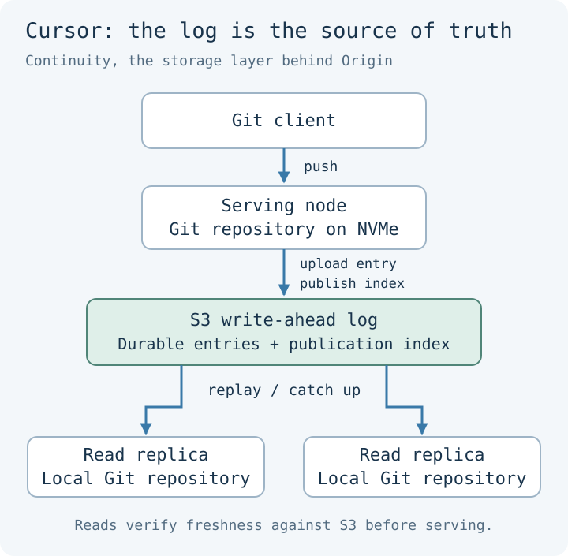

Rethinking Source Control for Agent Workloads
October 23, 2026
GitHub is rebuilding its Git infrastructure. Anthropic has moved its monorepo to a new source control system. Cursor has built a Git host of its own. Read those announcements together and it starts to sound like Git is running out of road.
I think the more interesting story is how much can change while git push stays exactly the same.
We tend to treat Git as one thing: the commands, the repository format, the server, and the workflow around pull requests. Those pieces can evolve independently. The recent infrastructure work makes that separation much more visible.
The expensive part is everything around the edit
In its October 6 infrastructure post, GitHub reported 7.38 billion commits in September 2026, more than five times the volume a year earlier. Monthly pushes grew from 690 million to 3.35 billion.
Those are activity counts, not a measure of useful software produced. But they describe a real infrastructure workload. Even a change that gets discarded can require a checkout, a branch, several checkpoints, and CI runs.
A developer can reuse a checkout for months. A fleet of agents can repeatedly create fresh environments, read the same files, push small changes, and disappear. If a job only needs to ask which files changed, preparing a local repository to answer that question can cost more than the query itself.
There are also two very different scaling problems here: thousands of workers contending on one enormous repository, and a platform managing millions of small, mostly idle repositories. The first needs more concurrency. The second needs a lower cost per repository. An architecture designed around several permanent copies of every repository feels pressure at both ends.
Anthropic changes what the client needs to know
Anthropic’s Scion post describes the extreme monorepo case: more than 30,000 merged changes a day and roughly 25 million daily CI checkouts. The company built Scion and migrated its monorepo in five months.
Its key choice is to assume an online client. The server computes diffs, blame, merges, and ancestry queries. Jobs can call those APIs without maintaining a local repository; clients that need files fetch them selectively.
Scion also changes the representation. A changeset records the files changed relative to its first parent, with pointers to file contents in blob storage. Separate derived structures support history and blame. Creating a changeset is separate from moving a branch reference.

That last distinction matters. Recording an experiment and making it the new state of main are different operations. A system can make the first cheap without requiring every writer to coordinate on the second.
The tradeoff is substantial: clients depend on the service, and adopting Scion also means replacing surrounding tools. Anthropic explicitly says it is unsuitable as a general-purpose Git replacement.
GitHub changes where writers have to wait
GitHub has to preserve compatibility with existing clients. Its October 21 architecture post describes an incremental bridge from Spokes, GitHub’s internal repository storage and replication system.
Spokes keeps full repository copies on local disks. In the architecture described, writes hold a repository-wide lock while replicas coordinate. A slow healthy replica delays the next write, even when it touches an unrelated branch.
GitHub is narrowing that coordination to individual references: the pointers behind branches and tags. Two agents pushing to different branches can proceed concurrently. Two writers updating the same branch still need ordering.
The other step is to separate read capacity from durability. A virtual write replica persists data in Azure Blob Storage. Virtual read replicas build local caches from that storage without joining the write quorum.

This is a transitional design. The quorum remains, and the initial read replicas reconcile in the background, so GitHub says they suit only some read workloads. Broader use requires checking and fetching changes as part of the read.
For an agent that pushes and immediately starts CI, freshness is part of correctness. The new commit must be available when the job tries to check it out.
Cursor makes the local repository disposable
Cursor’s Git at any scale describes Continuity, the storage system behind its Origin platform. It keeps ordinary Git repositories on fast local disks, but makes an S3-backed write-ahead log authoritative.
A push uploads a log entry. Publishing it requires preparing the local reference transaction and conditionally updating the log’s index in S3. Uploading bytes alone does not make the push visible.

Replicas catch up from the log. Before serving a read, they check the index in S3 and bring themselves up to date if necessary. This lets the system keep local copies for speed without making those copies the durable source of truth.
That helps at both ends of the workload: add replicas for a busy repository, or remove an idle repository from local disk and reconstruct it later. The durable data remains.
The coordination has moved into conditional updates in object storage. It still exists. That is the recurring design question across these systems: what is the smallest piece of shared state that writers must agree on?
Shopify CEO Tobi Lütke’s walgit makes this approach available as an open-source Git server. The project explicitly credits Cursor’s Continuity: a write-ahead log in object storage is authoritative, and a conditional update to a manifest publishes each push. Local repositories are disposable caches.
Walgit also aims to serve repositories larger than the machine hosting them. It can read parts of remote packfiles on demand and serve clone bundles directly from object storage. That makes the architectural idea tangible: a developer can inspect and run an implementation, then evaluate its tradeoffs against their own workload.
This did not start with agents
Large monorepos had already pushed source control beyond the model of a complete repository on every developer’s machine. Google documented its custom repository infrastructure in 2016. Meta’s work is an especially useful comparison.
Mononoke, the server in Meta’s Sapling ecosystem, uses an internal model called Bonsai and can serve both Sapling and Git clients. It derives the representations needed by those clients from a common underlying model. Anthropic explicitly credits Mononoke and Bonsai as influences on Scion.
This changes how I read the announcements. Much of the architecture has a history. Agents increase the frequency of operations, shorten the useful life of a checkout, and create demand for these techniques outside the organizations that originally built them.
Compatibility gives each layer room to change
The emerging products are making different choices about which layer to replace.
GitLab’s next-generation source control, described as a private beta in its October 13 post, preserves the Git protocol while combining stateless compute, shared object storage, and APIs for selective access. Its proposed path keeps merge requests and CI in the existing platform. That is an important adoption advantage for teams that cannot rebuild their entire development environment.
Pierre’s Code.Storage packages Git infrastructure for applications: repositories, file operations, and code search through SDKs, alongside native Git access. Its own description still uses a quorum-based architecture. An API aimed at agents does not, by itself, imply a new storage model.
East River Source Control takes the other approach: a custom, non-Git storage engine behind a Git protocol bridge. The compatibility boundary lets it change the server’s internals without requiring everyone to adopt a new client. Its proposed additional native protocol is future work, not an available feature.
Jujutsu illustrates the reverse direction. A developer can use a different client and workflow while keeping a regular Git repository underneath and collaborating with Git users. It is not a solution to hosting throughput, but it demonstrates why “replacing Git” is too imprecise to explain what a project is doing.
I expect Git compatibility to remain valuable precisely because it allows these experiments. A team can change its storage service, another can change its client, and they can still exchange commits.
A consistent repository can still contain broken software
There is a limit to what these storage improvements buy us. Per-reference concurrency helps agents publish independent branches. It does not make integrating all those branches into main independent.
Imagine two changes that pass their tests against the same base revision. One changes an API’s behavior; the other adds a caller relying on the old behavior. They might touch different files and merge cleanly. The storage system can preserve and order both changes perfectly while the combined application fails.
That is why the testing discussion in Anthropic’s post matters as much as the storage design. It describes investing in post-merge and pre-deployment testing as a global merge queue became impractical for its workload. That moves where failures are caught and makes fast diagnosis and recovery more important.
I would want to know which revision was tested, what changed afterward, how quickly a regression can be isolated, and whether it can be reverted safely. Commits per second tells us very little about those questions.
The same distinction applies to the economics. Cheap commits make it affordable to preserve more attempts. They do not tell us which attempts deserve review or should reach production. The useful measure is the cost and time to deliver a validated change.
What I expect to survive
For most projects, local history, offline work, and portable repositories are still excellent properties. A small team does not inherit Anthropic’s workload just by turning on a coding agent.
But a short-lived job asking for a diff does not necessarily need the same machinery as a developer investigating history offline. Giving each the right interface leaves room for substantial improvements without forcing a universal migration.
My bet is that many developers will keep using familiar Git commands while the servers behind them become less like a collection of repositories on disks. Agents will increasingly get operations directly through APIs. Some organizations will replace the entire system because their workload justifies the cost.
We can make storing an attempt much cheaper. The consequential step is deciding that it should become the version everyone else builds on. Faster source control gives us more room to experiment; it leaves that decision very much alive.